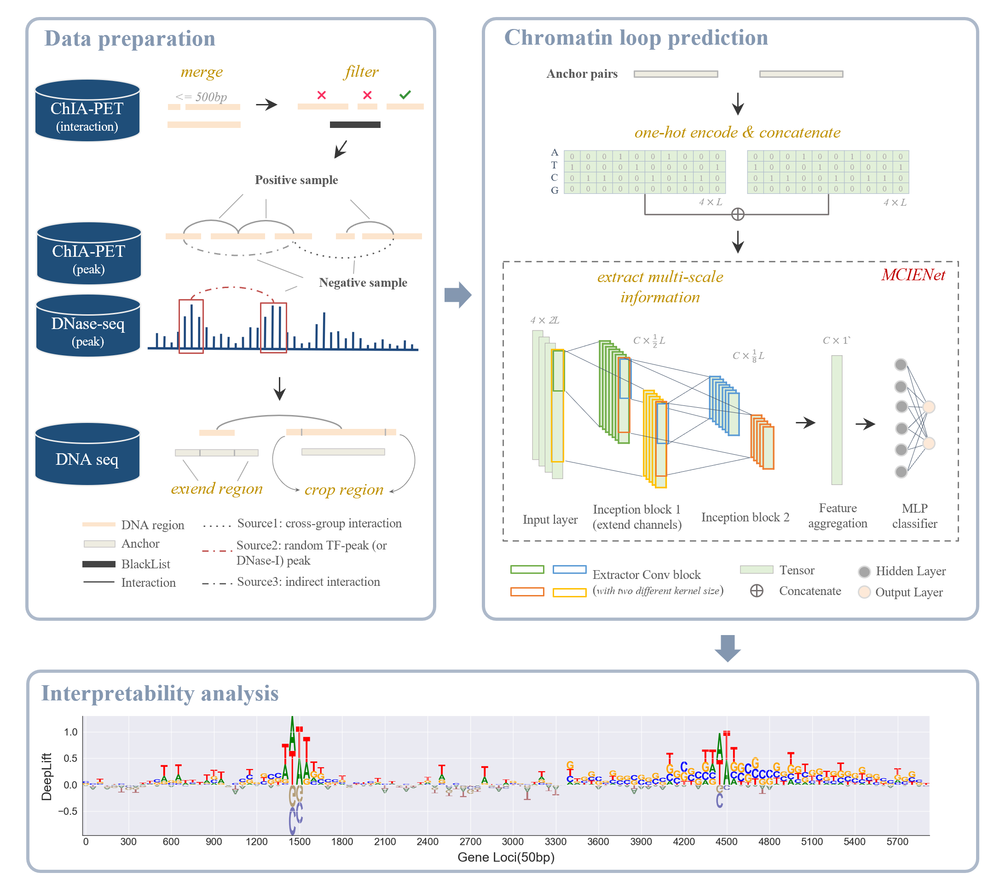

核心問題
DNA 序列不同尺度訊號需轉成可檢驗的三維染色質交互作用預測。
系統與資料流程
- 輸入
- DNA序列對與染色質交互作用／CTCF loop資料。
- 處理方式
- 以多尺度CNN檢查不同範圍訊號，透過消融、跨資料集與模型解釋核對。
- 產出
- 碩士論文、研究程式與可回查實驗配置。
我主導研究問題拆解與 MCIENet 模型架構，整合資料處理、消融實驗、跨資料集評估與可解釋性分析，完成論文與程式整理。

技術細節與驗證範圍
我的責任
研究問題與架構設計、資料流程整合、實驗與評估、論文撰寫，以及 repository 工程化。
多尺度回答什麼問題
輸入是一對基因區段的 DNA 序列與交互作用標籤。多尺度設計用不同卷積核的並行分支，檢查不同長度的局部序列訊息，再彙整成預測特徵。程式包含兩層 Inception 特徵抽取與可配置的特徵彙整；消融讓「哪個設計有幫助」成為可比較問題，而非只換一個模型名稱。
一個可重跑的消融對照
現有設定可比較資訊抽取分支只用長度 9 的卷積核，或採 3／5／7／9 並行分支；兩組均保留 1×1 訊息保留與 pooling 分支。兩組總通道都為 100，學習率、訓練上限及資料輸入設定相同。它支持一個可重跑的比較設計，但不同分支的參數總量仍需另外控制，不能把配置直接當作尺度效果或優勝的證明。
驗證方式與樣本單位
研究以序列對為分類樣本，透過消融、跨資料集評估及可解釋性分析檢查模型。後續比較腳本保留同一資料的 train／dev／test；共切分可避免比較時換掉樣本，但不自動證明基因區段無重疊或跨細胞類型皆可泛化。
讓對照實驗能被重跑
資料流程以 GM12878 與 HeLa-S3 的 CTCF 資料為範例；研究程式分開 BaseCNN 與 MCIENet 的訓練及 DeepLIFT 分析入口。後續比較腳本把同一份 data.h5 的 train／dev／test 切分轉成 ChINN 與 DNABERT2 所需格式，再將測試指標匯入共同格式。
這些程式與配置讓模型比較可以使用一致輸入、重跑並核對結果。跨細胞類型的泛化仍有限制；保留比較入口也不代表每個基準都已完成或全面優於其他方法。
方法歸屬
部分正負樣本前處理基於 ChINN 調整與整合；第三方基礎方法與自己的模型設計分開說明。
成果與驗證範圍
完成碩士論文、研究程式及配置，提供消融、跨資料集評估與模型解釋。
適用範圍
資料前處理部分沿用 ChINN；模型效果與泛化依實際資料及實驗設定解讀。